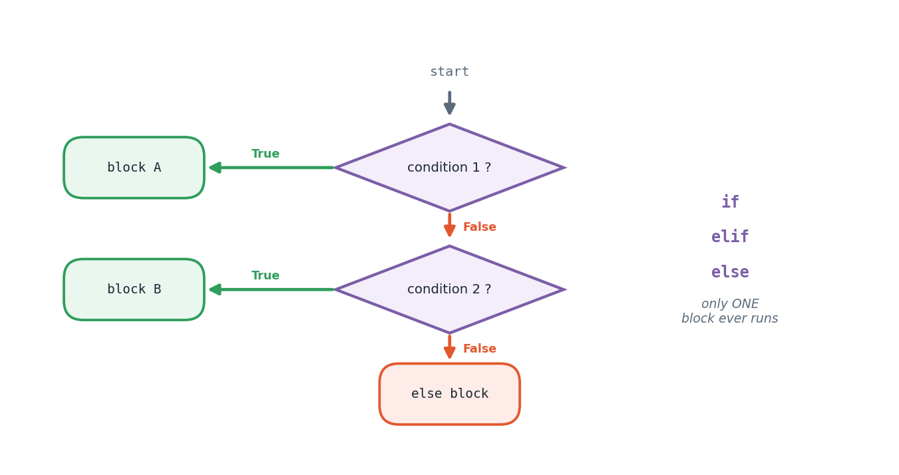

The big idea
So far every program has run top to bottom, every line, every time. Real programs need to choose: show a pass message or a fail message, take the leap-year path or the ordinary one, warn the user or proceed quietly.
The if statement is how Python chooses. It evaluates a condition — any expression that produces
True or False — and runs the indented block underneath only when that condition holds.
The critical detail, and the one that makes an if / elif / elif / else chain different from
several separate if statements, is that at most one branch in a chain ever runs. Python tests
each condition in order, takes the first that is True, executes it, and skips everything else in the
chain. Separate if statements are all tested independently, so several can fire.
Python is also unusual in that indentation is the syntax. There are no braces marking a block —
the whitespace itself defines what belongs inside the if. This is why Python code from different
people looks so similar, and why a stray space can change a program's meaning.

How it works
Comparison and logical operators
| Operator | Question it asks |
|---|---|
== != |
are these equal / not equal? |
< > <= >= |
ordering comparisons |
and |
are both sides true? |
or |
is either side true? |
not |
flip the truth value |
Python allows chained comparisons that read like mathematics: if 0 <= score <= 100: is valid and
means exactly what it looks like.
Short-circuit evaluation
and stops as soon as it meets a False; or stops at the first True. This is not just an
optimisation — it lets you write safe guards:
if len(items) > 0 and items[0] == "x": # the second test never runs on an empty list
Truthiness
Any value can be used as a condition. Empty things (0, "", [], {}, None) count as False;
everything else counts as True. So if names: is the idiomatic way to say "if the list has anything
in it".
When a chain gets too long
Once you have six or seven branches all mapping a value to a result — grade bands being the classic
case — a long elif ladder becomes hard to read and easy to break. A lookup table (a list of
ranges, or a dictionary) separates the data from the logic, so adding a new band means editing one
line of data rather than surgery on control flow. Experiment 3 finishes with exactly that refactor.
The tasks
Everything above was theory. What follows is the lab work — each task stated, explained, then solved with code that really ran.
Task 1
Task 1 — Divisible by Both 3 and 5?
check_num = 60 divisible_both = check_num % 3 == 0 and check_num % 5 == 0 print(f"{check_num} divisible by both 3 and 5? -> {divisible_both}")
60 divisible by both 3 and 5? -> True
Task 2
Task 2 — Multiple of 5?
check_num2 = 44 print(f"{check_num2} is a multiple of 5" if check_num2 % 5 == 0 else f"{check_num2} is not a multiple of 5")
44 is not a multiple of 5
Task 3
Task 3 — Larger of Two Numbers (or Equal)
val_x, val_y = 21, 21 if val_x == val_y: print("numbers are equal") elif val_x > val_y: print("Greatest number is", val_x) else: print("Greatest number is", val_y)
numbers are equal
Task 4
Task 4 — Largest of Three Distinct Numbers
Using max() keeps this compact, but the logic is the same three-way
comparison under the hood.
p, q, r = 34, 91, 58 largest = max(p, q, r) print("Greatest number is", largest)
Greatest number is 91
Task 5
Task 5 — Real or Imaginary Roots of a Quadratic
ax^2 + bx + c = 0. The discriminant's sign tells us whether roots are
real or complex; cmath handles both cases uniformly.
import cmath coef_a, coef_b, coef_c = 2, 4, 7 disc = coef_b ** 2 - 4 * coef_a * coef_c r1 = (-coef_b + cmath.sqrt(disc)) / (2 * coef_a) r2 = (-coef_b - cmath.sqrt(disc)) / (2 * coef_a) nature = "real" if disc >= 0 else "imaginary" print(f"Discriminant = {disc} -> roots are {nature}") print("Root 1:", r1) print("Root 2:", r2)
Discriminant = -40 -> roots are imaginary Root 1: (-1+1.5811388300841898j) Root 2: (-1-1.5811388300841898j)
Task 6
Task 6 — Leap Year Test
A year is a leap year if divisible by 4, except centuries, unless also divisible by 400.
check_year = 2100 is_leap = (check_year % 4 == 0 and check_year % 100 != 0) or (check_year % 400 == 0) print(f"{check_year} -> {'Leap year' if is_leap else 'Not a leap year'}")
2100 -> Not a leap year
Task 7
Task 7 — Tomorrow's Date
Adding a single timedelta(days=1) to any date object handles month/year
rollover automatically.
from datetime import date, timedelta given_date = date(2024, 2, 28) tomorrow = given_date + timedelta(days=1) print("Given date :", given_date.strftime("%d-%m-%Y")) print("Next date :", tomorrow.strftime("%d-%m-%Y"))
Given date : 28-02-2024 Next date : 29-02-2024
Task 8
Task 8 — Grade Sheet from Five Subject Marks
Percentage feeds a CGPA, and the CGPA is mapped to a letter grade through a
small lookup table of (low, high, label) ranges instead of a long
if/elif chain.
def cgpa_to_grade(cgpa_value): grade_bands = [ (0.0, 3.4, "F"), (3.5, 5.0, "C+"), (5.1, 6.0, "B"), (6.1, 7.0, "B+"), (7.1, 8.0, "A"), (8.1, 9.0, "A+"), (9.1, 10.0, "O (Outstanding)"), ] for low, high, label in grade_bands: if low <= cgpa_value <= high: return label return "Invalid CGPA" learner_name = "Ananya Iyer" roll_number = "R19834210" sap_number = "50008841" sem_no = 2 degree_name = "B.Tech. CSE (Data Science)" subject_marks = { "Programming": 85, "Mathematics": 76, "Physics": 69, "Communication":88, "Statistics": 91, } marks_total = sum(subject_marks.values()) marks_pct = marks_total / (len(subject_marks) * 100) * 100 cgpa_score = round(marks_pct / 10, 1) final_grade = cgpa_to_grade(cgpa_score) print("=== Gradesheet ===") print("Name:", learner_name) print("Roll No:", roll_number, "| SAP ID:", sap_number) print("Semester:", sem_no, "| Programme:", degree_name) print("\nSubject-wise Marks:") for subject, score in subject_marks.items(): print(f" {subject}: {score}") print(f"\nPercentage: {marks_pct:.2f}%") print("CGPA:", cgpa_score) print("Grade:", final_grade)
=== Gradesheet === Name: Ananya Iyer Roll No: R19834210 | SAP ID: 50008841 Semester: 2 | Programme: B.Tech. CSE (Data Science) Subject-wise Marks: Programming: 85 Mathematics: 76 Physics: 69 Communication: 88 Statistics: 91 Percentage: 81.80% CGPA: 8.2 Grade: A+
Common pitfalls
IndentationError. Pick spaces (four of them) and let your editor enforce it.if x = 5:Assignment inside a plain if condition is a syntax error. You want ==.<= 5.0 then >= 5.1 silently ignore 5.05. Design boundaries deliberately.== Trueif is_valid == True: works but if is_valid: is clearer and idiomatic.